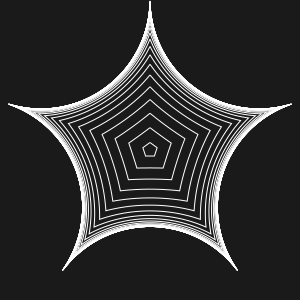
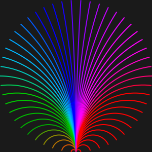
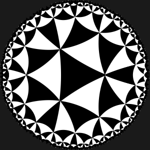

PoincareDisk.jl
Exploring the Poincaré Disk
drawing hyperbolic graphics on the Poincaré disk

Draw hyperbolic graphics
Draw various hyperbolic graphics on the Poincaré disk. Use Luxor.jl to control the appearance and style of the output.

Hyperbolic lines, circles, and polygons
You can draw various kinds of hyperbolic graphics - lines, circles, and polygons.

Hyperbolic tilings
Draw various hyperbolic tilings on the disk.
Introduction
PoincareDisk is a little Julia package that lets you draw graphics on the Poincaré disk. It uses Luxor.jl to draw the graphics.
Installation
This package isn't registered. Install it by typing this in the Julia REPL:
julia> import Pkgjulia> Pkg.add("https://github.com/cormullion/PoincareDisk.jl")Documentation
This documentation was built using Documenter.jl.
Documentation built 2026-09-04T14:57:28.429 with Julia 1.12.6 on Darwin